IntelliJ IDEA + Gradle Setup for OpenEMS
- 1. Prerequisites
- 2. Import the repository as a Gradle project
- 3. Load / sync the Gradle project
- 4. Create a Run configuration for Edge (JAR)
- 5. Install required IDE plugins
- 6. Configure Checkstyle
- 7. Enable Eclipse formatting
- 8. IntelliJ code style tweaks (imports and tabs)
- 9. Debugging tests (Kotlin coroutine agent)
- 10. Run the UI from IntelliJ (optional)
- 11. IntelliJ Commit
This page describes how to import the OpenEMS openems repository into IntelliJ IDEA as a Gradle project and how to create useful run/debug configurations.
1. Prerequisites
-
IntelliJ IDEA (Community or Ultimate)
-
A JDK matching the OpenEMS build requirements (commonly JDK 21; e.g., Temurin 21)
-
Git
-
(Optional for UI) Node.js + npm, and the Angular CLI (or the tooling used in your OpenEMS UI setup)
2. Import the repository as a Gradle project
-
Start IntelliJ IDEA (open any project or use the Welcome screen).
-
Select File → New → Project from Existing Sources…
-
Choose the repository folder (commonly named
openems) and import it as a Gradle project. -
If IntelliJ asks which window to use, select This Window.
|
Import the project as Gradle (not as a plain IntelliJ project). This ensures IntelliJ uses the Gradle model for module structure, dependencies, and tasks. |
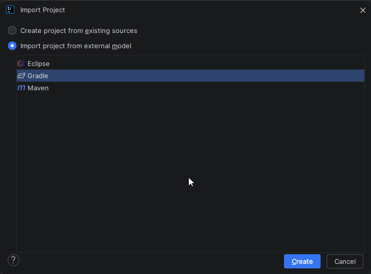
3. Load / sync the Gradle project
After opening the repository, IntelliJ should show a popup like “Gradle build scripts found”.
-
Click Load Gradle Project.
-
Wait until the Gradle import finishes (you can see progress in the status bar, e.g. “Importing Gradle Project …”).
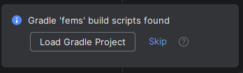
4. Create a Run configuration for Edge (JAR)
The common workflow is:
-
Build the Edge JAR with a Gradle task (e.g.
buildEdge) -
Run the generated JAR from IntelliJ
4.1. Create a “JAR Application” configuration
-
Open Run → Edit Configurations…
-
Click + and add a new JAR Application configuration.
-
Fill in the values similar to the following (adapt paths to your machine):
-
Name:
Run Edge(example) -
Path to JAR:
/<path-to-your-repo>/build/openems-edge.jar(example) -
Working directory:
/<path-to-your-repo>/ -
JRE: select your configured JDK (e.g.,
temurin-21)
-
|
If the jar name or location differs in your checkout, search in your repository for the jar output produced by the Gradle task |
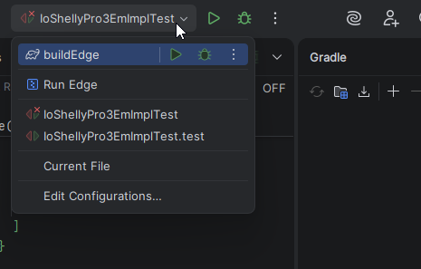
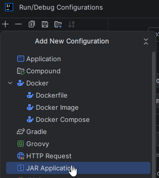
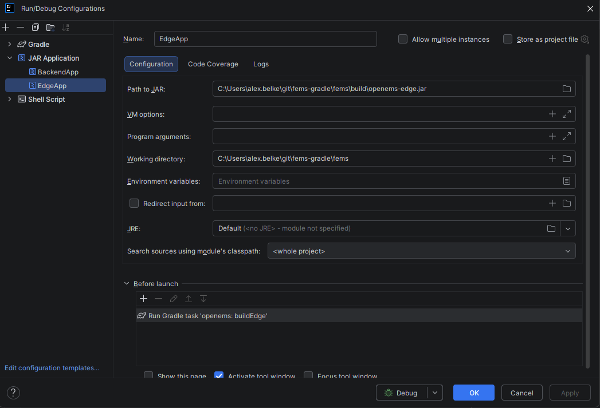
4.2. Add a “Before launch” Gradle task
To ensure the JAR is up-to-date on every run:
-
In the same Run configuration, find the Before launch section.
-
Add a Gradle task.
-
Set:
-
Gradle project:
openems -
Tasks:
buildEdge
-
Now, running Run Edge will build the Edge jar first and then launch it.
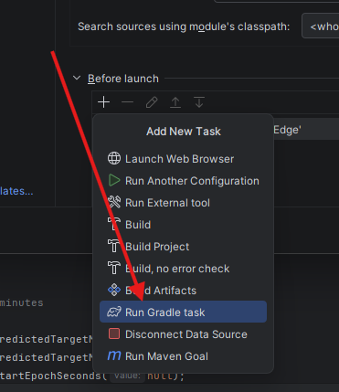
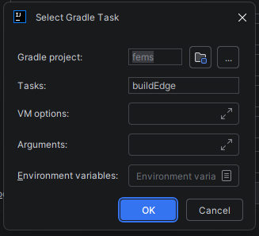
5. Install required IDE plugins
Install these IntelliJ plugins:
-
Adapter for Eclipse Code Formatter
-
CheckStyle-IDEA
Path: Settings/Preferences → Plugins.
6. Configure Checkstyle
-
Open Settings/Preferences → Tools → Checkstyle.
-
Add a new configuration:
-
Description:
OpenEMS(example) -
File: point to the repository checkstyle configuration (commonly
cnf/checkstyle.xml)
-
-
Click Next → Finish and activate the created configuration.
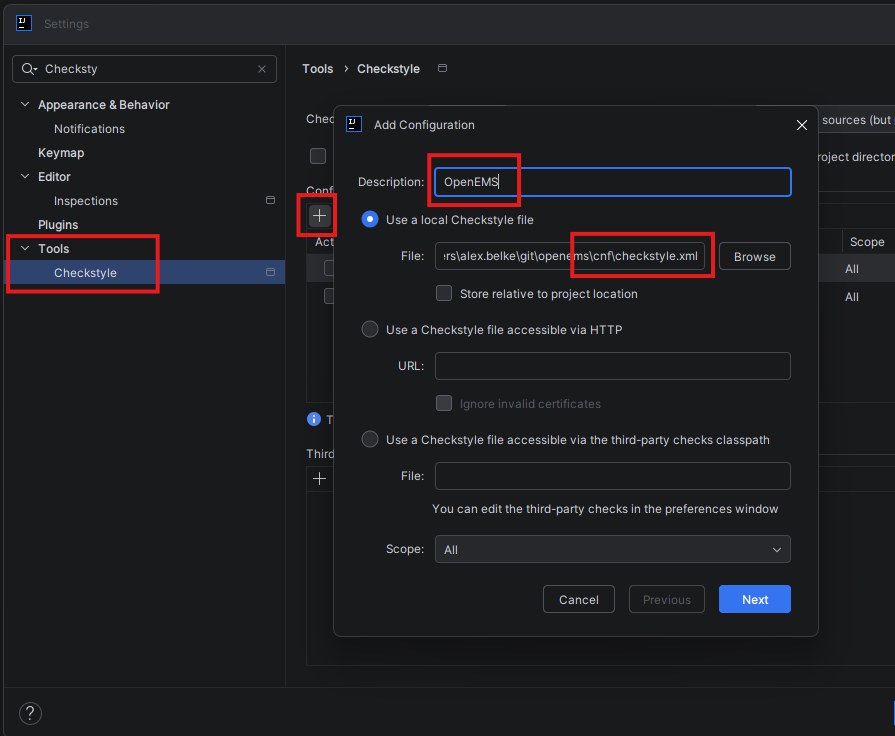
7. Enable Eclipse formatting
This aligns IntelliJ formatting with the formatting used in Eclipse-based setups.
-
Open Settings/Preferences → Adapter for Eclipse Code Formatter.
-
Enable Use Eclipse’s Code Formatter.
-
Set the Eclipse installation folder to your local Eclipse installation (only needed if your plugin version requires it).
-
Select a profile, e.g.
Eclipse (built-in)or the profile agreed upon in your project.
|
If your team has an exported Eclipse formatter profile (e.g. |
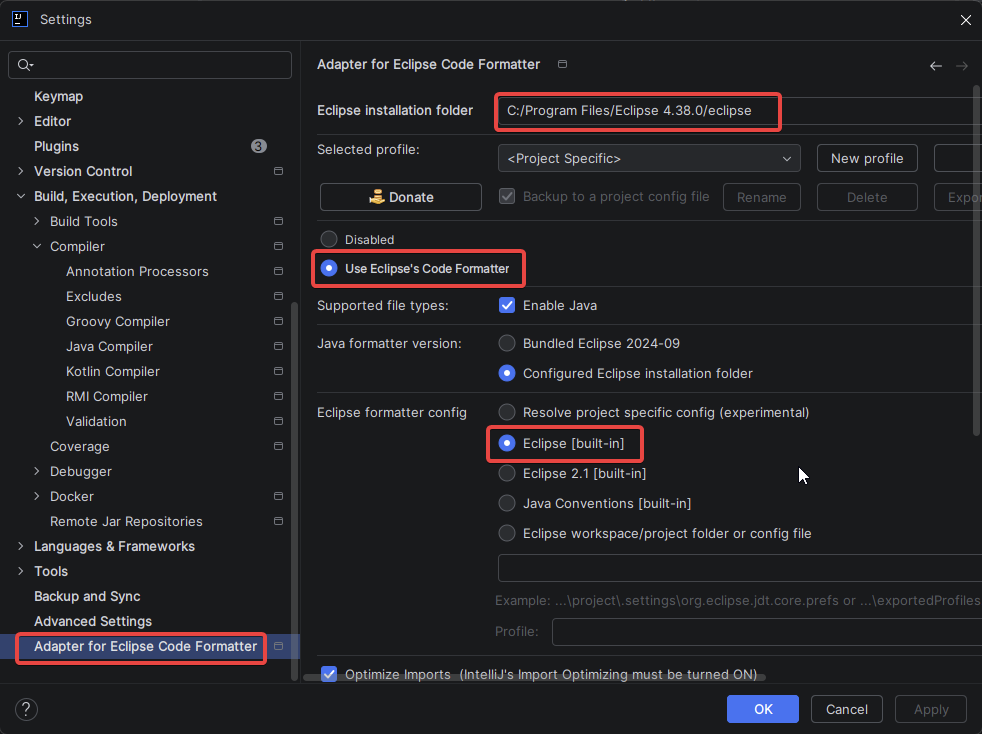
8. IntelliJ code style tweaks (imports and tabs)
Some teams require specific import and indentation behavior.
8.1. Imports: avoid wildcard imports
-
Open Settings/Preferences → Editor → Code Style → Java → Imports.
-
Configure the thresholds for wildcard imports to high values (example:
999) to avoid*imports:-
(1) Remove java.awt. and javax.swing.* imports*: unchecked (unless your project uses these packages)
-
(2) Class count to use import with ''*:
999 -
(2) Names count to use static import with ''*:
999
-
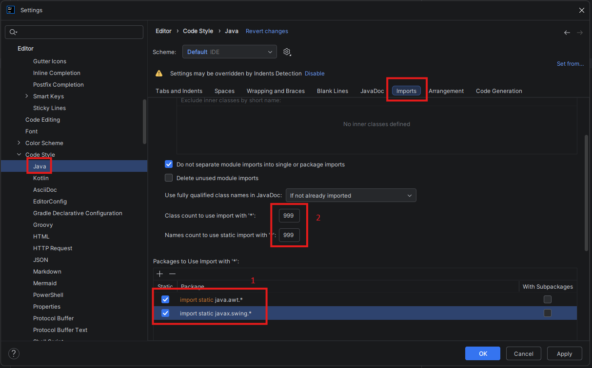
8.2. Indentation: tabs vs spaces
-
Open Settings/Preferences → Editor → Code Style → Java → Tabs and Indents.
-
If your project uses tabs, enable Use tab character.
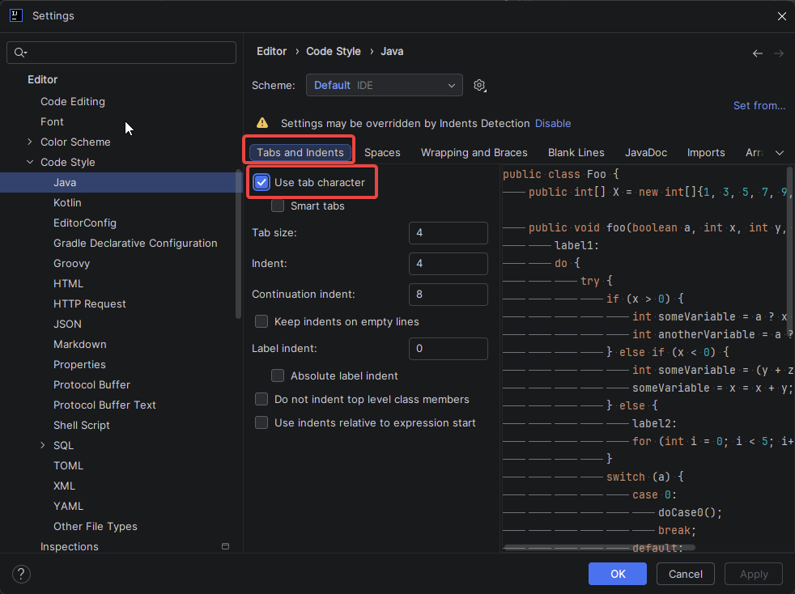
-
Repeat for other languages used in your project (e.g., Kotlin, XML, etc.) if they have different indentation rules.
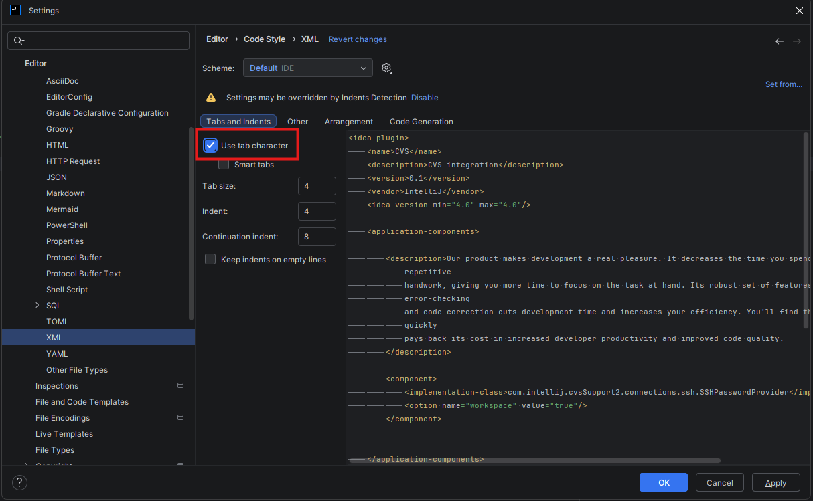
|
Follow your repository / team conventions. If unsure, check existing source files and the formatting rules. |
9. Debugging tests (Kotlin coroutine agent)
If test debugging behaves unexpectedly, disable the Kotlin coroutine agent:
-
Go to Settings/Preferences → Build, Execution, Deployment → Debugger.
-
Under Kotlin, uncheck Attach coroutine agent.
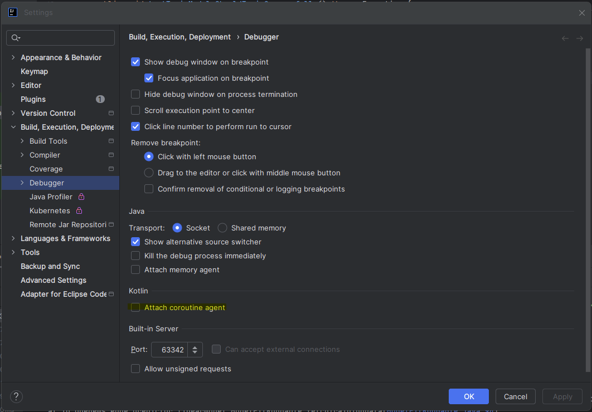
10. Run the UI from IntelliJ (optional)
You can start the UI dev server from IntelliJ via a Shell Script configuration.
-
Open Run → Edit Configurations…
-
Add a new configuration of type Shell Script.
-
Set:
-
Name:
UI -
Script text:
ng serve -o -c openems-edge-dev -
Working directory:
/<path-to-your-repo>/ui
-
-
Apply and run.
|
This requires that UI dependencies are installed (usually via |
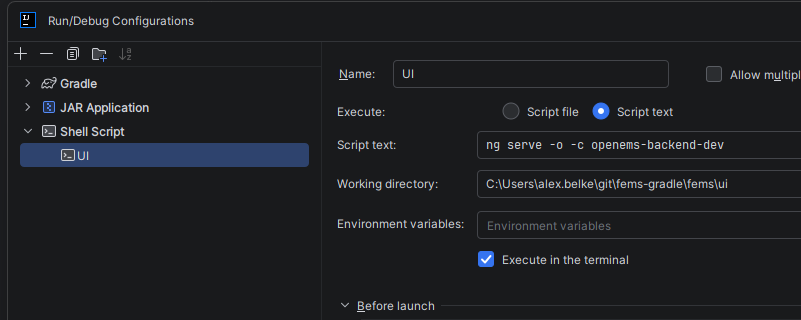
11. IntelliJ Commit
To ensure code is properly formatted and quality checks run on commit. Click on gear icon in the Commit tool window and enable:
-
Reformat code
-
Run Checkstyle
-
Optimize imports
-
Scan with Checkstyle
-
Perform SonarQube for IDE analysis (if SonarQube plugin is installed)
-
Check TODOs
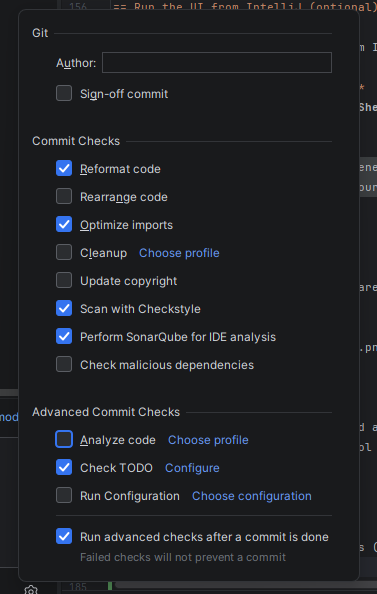